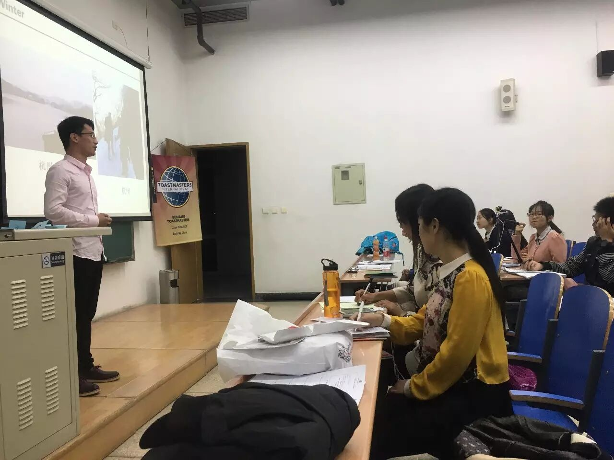
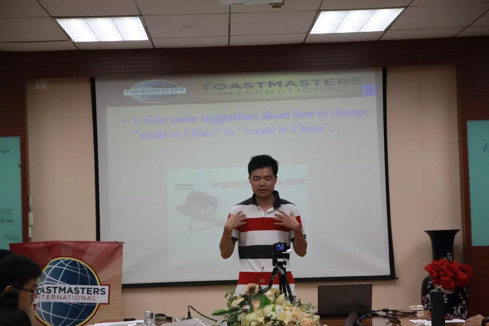
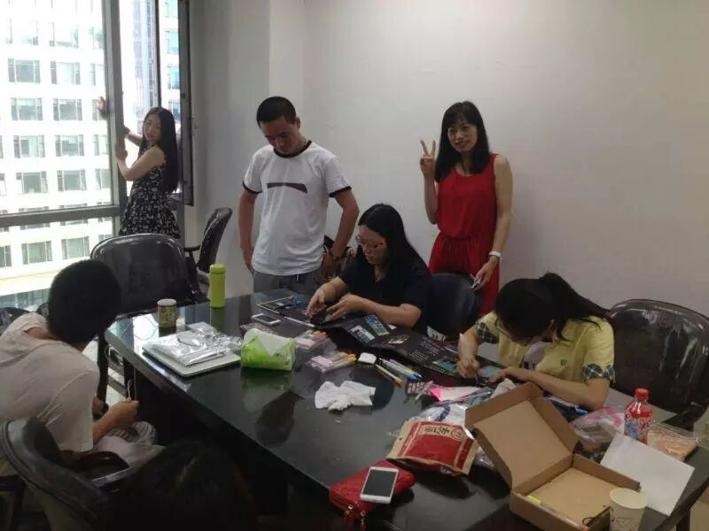
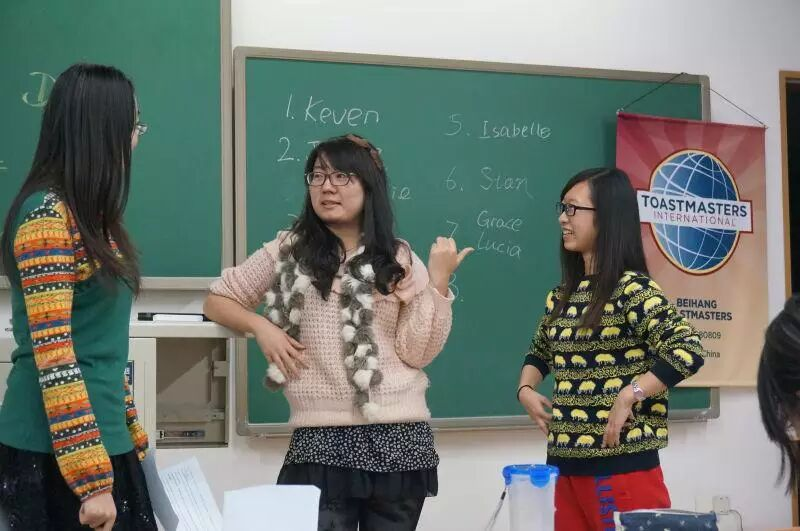
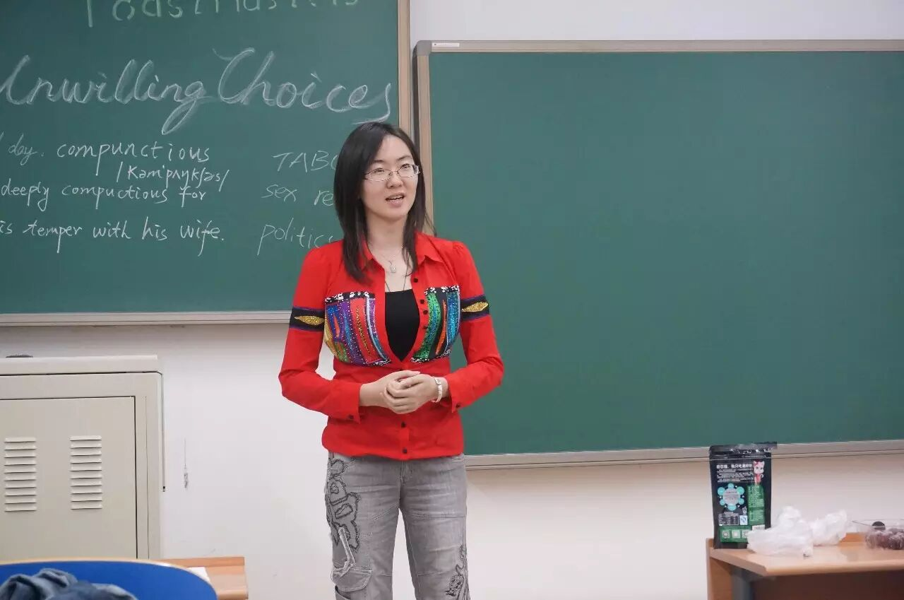
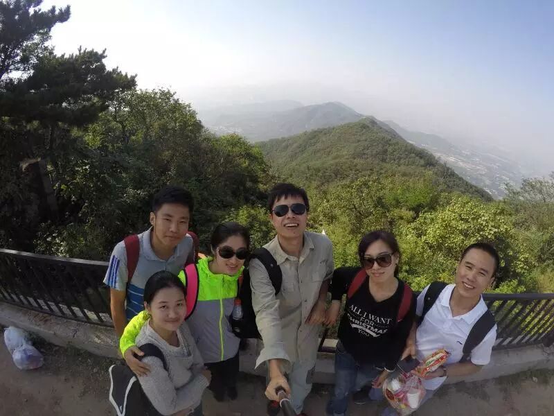
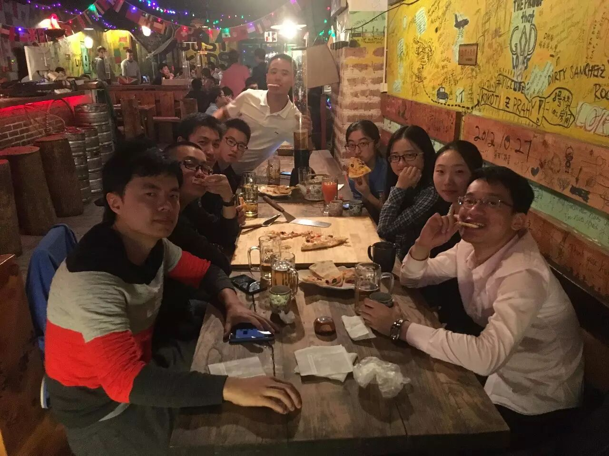
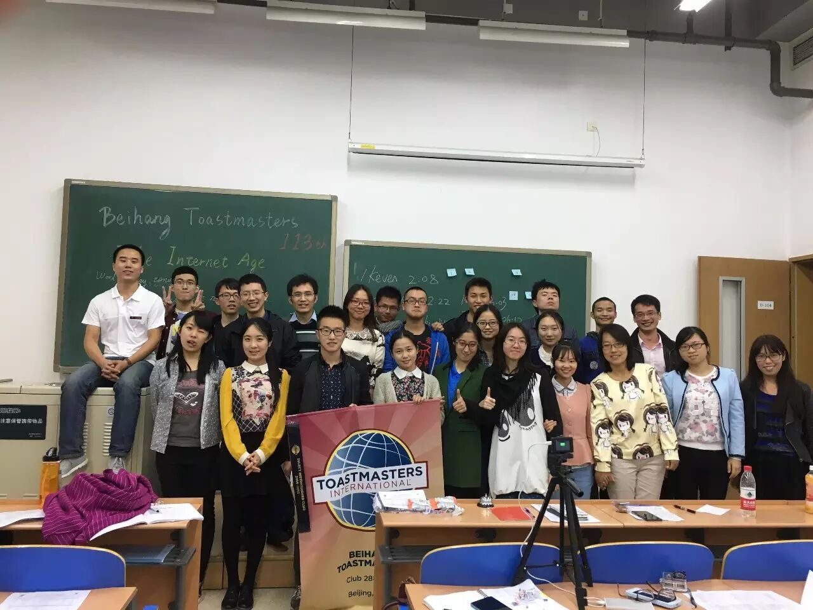
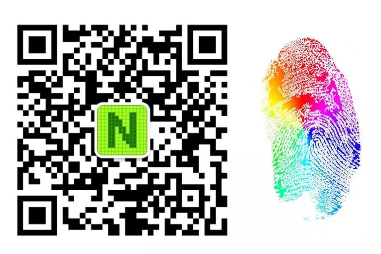

Beihang Toastmasters Club
北航Toastmasters国际英语演讲俱乐部是一个面向校内外提供专业化，高标准英语的交流平台，旨在提升公共演讲能力、培养团队精神与领袖气质，结识校内外、国内外朋友。北航Toastmasters已经有近3年的成长经验，享受微软、IBM等多个企业Toastmasters俱乐部的支持，并承袭Toastmasters International总部80年的优良传统，努力做好服务学生服务社会的非营利组织。
活动形式：
以即兴演讲、备稿演讲为主，每周更换活动主题，多个角色构成的专业化综合评价体系会给予演讲者详细点评，反馈便条和有奖问答的特色设计增强了会议的气氛，会议前、会议间歇和会后均提供自由交流机会。
活动时间：每周五19:30-21:30
活动地点：北航新主楼B104
我们能提供什么？？
Ø 中英文演讲平台

Ø 口语帝的诞生地

Ø 活动策划与主持机会

Ø 结识帅哥美女和外籍朋友的机会

Ø 领袖是练出来的

Ø 丰富的出游活动～

Ø 去野游、聚餐、真人密室逃脱吧！

所以，还在等什么？？？赶紧来加入我们吧~~！！！长按下图的二维码——
联系人：
Bowen(张博文）：
Tel：17801098588 WeChat：bowenjayconan
Maggie（马哲）：
Tel：18518225289 WeChat：maggie0303mazhe
想要了解更多关于Toastmasters的信息请登录www.toastmasters.org

如果你喜欢北航新鲜事
就长按指纹关注吧~~

点击“阅读原文”还可购买北航纪念品哦~